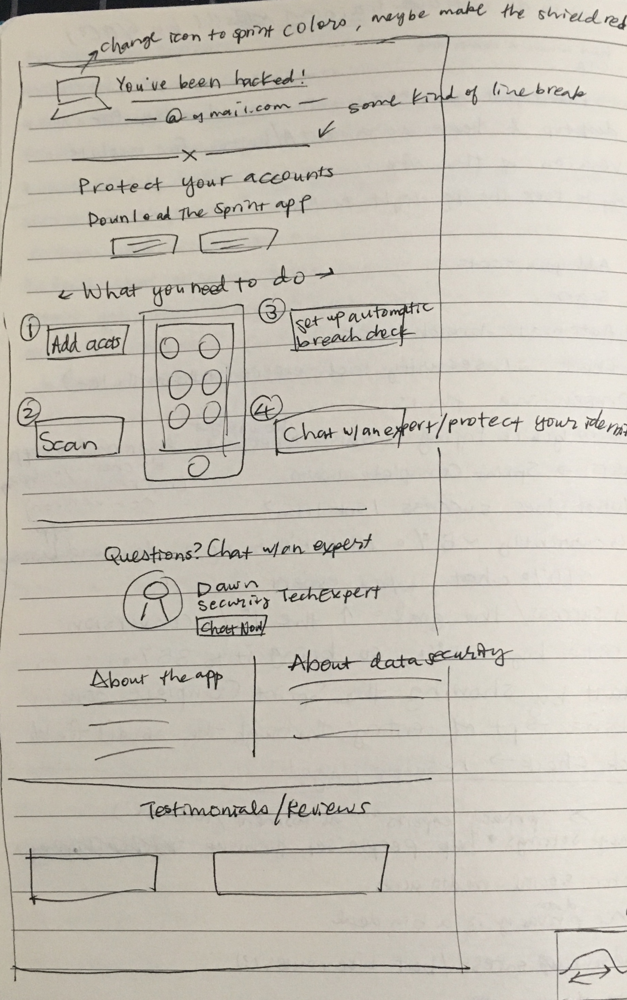

<!DOCTYPE html>
<html>
</html>
<head>
  <meta charset="utf-8">
  <meta http-equiv="X-UA-Compatible" content="IE=edge">
  <title>Asurion + Sprint | Project 1</title>
  <meta name="description" content="">
  <meta name="viewport" content="width=device-width, initial-scale=1">
  <meta name="robots" content="all,follow">
  <!-- Bootstrap CSS-->
  <link rel="stylesheet" href="vendor/bootstrap/css/bootstrap.min.css">
  <!-- Font Awesome CSS-->
  <link rel="stylesheet" href="vendor/font-awesome/css/font-awesome.min.css">
  <!-- Google fonts - Roboto-->
  <link rel="stylesheet" href="https://fonts.googleapis.com/css?family=Roboto:400,300,700,400italic">
  <!-- owl carousel-->
  <link rel="stylesheet" href="vendor/owl.carousel/assets/owl.carousel.css">
  <link rel="stylesheet" href="vendor/owl.carousel/assets/owl.theme.default.css">
  <!-- theme stylesheet-->
  <link rel="stylesheet" href="css/style.turquoise.css" id="theme-stylesheet">
  <!-- Custom stylesheet - for your changes-->
  <link rel="stylesheet" href="css/custom.css">
  <!-- Favicon-->
  <!-- <link rel="shortcut icon" href="img/favicon.png"> -->
  <link rel="apple-touch-icon" sizes="180x180" href="favicon/apple-touch-icon.png">
  <link rel="icon" type="image/png" sizes="32x32" href="favicon/favicon-32x32.png">
  <link rel="icon" type="image/png" sizes="16x16" href="favicon/favicon-16x16.png">
  <link rel="manifest" href="favicon/site.webmanifest">
  <!-- Tweaks for older IEs--><!--[if lt IE 9]>
    <script src="https://oss.maxcdn.com/html5shiv/3.7.3/html5shiv.min.js"></script>
    <script src="https://oss.maxcdn.com/respond/1.4.2/respond.min.js"></script><![endif]-->
</head>
<body>
  <!--to keep Firefox from showing body text before head is loaded- FOUT-->
  <script>0</script>
  <div id="all">
    <div class="container-fluid">
      <div class="row row-offcanvas row-offcanvas-left"> 
        <!--   *** SIDEBAR ***-->
        <div id="sidebar" class="col-md-4 col-lg-3 sidebar-offcanvas">
          <div class="sidebar-content">
            <h1 class="sidebar-heading"> <a href="index.html">Alexandra Huang</a></h1>
            <p class="sidebar-p">I'm a product designer/UX researcher with a master's in Human Factors and Ergonomics, currently working as a data analyst.</p>
            <!--<p class="sidebar-p">Currently based in the San Francisco Bay Area.</p>-->
            <ul class="sidebar-menu">
                <!-- Link-->
                <li class="sidebar-item"><a href="index.html" class="sidebar-link active">Portfolio</a></li>
                <!-- Link-->
                <li class="sidebar-item"><a href="about.html" class="sidebar-link">About</a></li>
                <!-- Link-->
                <li class="sidebar-item"><a href="contact.html" class="sidebar-link">Get in touch</a></li>
            </ul>
            <p class="social"><a href="mailto:alexandra[dot]huang[at]gmail[dot]com" data-animate-hover="pulse" class="email"><i class="fa fa-envelope"></i></a><a href="https://www.linkedin.com/in/alexandrayhuang" data-animate-hover="pulse" class="external linkedin"><i class="fa fa-linkedin"></i></a><a href="https://github.com/alexandra-huang" data-animate-hover="pulse" class="external github"><i class="fa fa-github"></i></a></p>
            <div class="copyright text-center text-md-left">
              <p class="credit">Copyright &copy; 2024 Alexandra Huang | Template by <a href="http://bootstrapious.com/portfolio-themes" class="external">Bootstrapious.com</a></p>
              <!-- Please do not remove the backlink to us, unless you support the development at http://bootstrapious.com/donate. It is part of the license conditions. Thanks for understanding :)        -->
            </div>
          </div>
        </div>
        <!--   *** SIDEBAR END ***  -->
        <!--   *** DETAIL ***-->
        <div class="col-md-8 col-lg-9 content-column white-background">
          <div class="small-navbar d-flex d-md-none">
            <button type="button" data-toggle="offcanvas" class="btn btn-outline-primary"> <i class="fa fa-align-left mr-2"></i>Menu</button>
            <h1 class="small-navbar-heading"> <a href="index.html">Alexandra Huang</a></h1>
          </div>
          <div class="row">
            <div class="col-xl-10">
              <div class="content-column-content">
                <h1>Sprint Complete Security Breach Check Results Page Redesign</h1>
                <p class="lead"><strong>Researched and redesigned</strong> the results page for the Sprint Complete website’s security breach check feature that promotes the mobile app through a direct download link to the app or to chat with an Asurion expert. <strong>Increased conversion from 23% to 47.7%.</strong></p>
                <div id="main-slider" class="owl-carousel owl-theme">
                  <div class="item"></div>
                  <div class="item"></div>
                </div>
                <!-- /#main-slider-->
                <blockquote class="blockquote">
                  <p class="mb-0"><strong>Keywords:</strong> UX design, user research, usability testing, iteration, prototyping, Sketch, Invision</p>
                  <br>
                  <p class="mb-0"><strong>Team:</strong> <strong>1 product designer (me)</strong>, 1 product manager, 1 engineer (web development)</p>
                  <br>
                  <p class="mb-0"><strong>When:</strong> 4 weeks in May - June 2019. Launched July 2019</p>
                    <ul>
                      <li>1 week for initial usability testing and research</li> 
                      <li>2 weeks to design, iterate, and prototype</li> 
                      <li>1 week for the redesign’s usability testing and improvement</li>
                    </ul>
                </blockquote>
                <hr>
                <h3>Background</h3>
                <p>Asurion is a company that provides device insurance plans, including mobile phone insurance through major carriers like AT&T and Sprint. Sprint Complete, Sprint’s insurance plan offered by Asurion, includes the Complete Security mobile app. The Sprint Complete website that discusses the plan’s offerings has a security breach feature on the home page where the user enters their email to run a check to see if any of the accounts they have linked to that email have been hacked. The breach check results page also includes links to download the Complete Security app and the option to chat with a Tech Expert to learn more about the app and thus drive downloads.</p>
                <hr>
                <!--User and Business Problems-->
                <h3>Problems and Opportunities</h3>
                <p class="proj-body"><strong>Users:</strong> Issues of understandability and value proposition discovered through both heuristic evaluation and remote usability testing via UserTesting.com.</p>
                <ul class="proj-body-list">
                  <li>"This whole page has really told me what I need to know by not telling me what I need to know."</li> 
                  <li>"It doesn’t give you any information, which is completely stupid like it doesn’t give you anything; it doesn’t tell you how they found that out it doesn’t tell you how many or where or who or anything. It’s just completely vague and non-helpful."</li> 
                </ul>
                <p class="proj-body"><strong>Business:</strong> Increase conversion of people who received a breach check result from 23% to at least 35%, with conversion defined as (1) downloading the Complete Security app, or (2) chatting with an Expert.</p>
                <p>Previously, from March 18 - July 9, conversion to either chat or download the app was at 23%.</p>
                <hr>
                <h3>Design Process</h3>
                
                <!--Heuristic Eval-->
                <h4>Heuristic Evaluation</h4>
                <p class="proj-body">Since most Sprint Complete customers don’t have in-depth technical knowledge, as gleaned from market research, I began my design process by performing a heuristic evaluation of the breach check results page with that knowledge in mind.</p>
                <p class="proj-body">The main issues I found were:</p>
                <ul class="proj-body-list">
                  <li>A lack of clarity in that the copy used on the current results page <strong>didn’t match the language</strong> of Sprint Complete customers. For example, what does a “potential breach” mean?</li> 
                  <li>A lack of <strong>transparency</strong> as to how the breach check is performed. Why should I trust the results of this check?</li> 
                  <li>An <strong>unclear value proposition</strong> for the Complete Security app. How will I benefit from downloading the app? How exactly will it help me?</li> 
                </ul>
                <br>
                <!--Initial Usability Testing section-->
                <h4>Initial Usability Testing (Problem Discovery)</h4>
                <p class="proj-body">Based on the results of my heuristic evaluation, I developed questions for usability testing of the existing breach check results page to uncover the user’s pain points and provide insight into why users are not taking action to either download the Complete Security app or chat with an Expert. An <strong>unmoderated, remote usability test</strong> through UserTesting.com was chosen for its cost-effectiveness and quick turnaround time.</p>
                <p class="proj-body">The major findings included:</p>
                <ul class="proj-body-list">
                  <li>Users <strong>misunderstood what the Complete Security app does</strong> or didn’t understand it at all.</li> 
                  <li>Users would not chat with a Tech Expert or probably would not, since they <strong>didn’t understand the purpose of chatting with an expert</strong>.</li> 
                  <li>Users <strong>didn't trust the result</strong> they got or even understand it correctly.</li> 
                </ul>
                <p class="proj-body">The results complemented the heuristic evaluation and mainly centered around issues of trust and the communication of the value proposition and purpose of the app as well as the Tech Experts.</p>
                <br>
                <!--Competitive Analysis-->
                <h4>Competitive Analysis</h4>
                <p class="proj-body">In brainstorming ideas, I drew off of a competitive analysis I performed on a variety of mobile app landing pages, including several competing password management apps such as LastPass and Dashlane, in order to see how these apps show their value to the users and drive downloads.</p>

                <!-- <map name="m1">
                  <area shape="default" href="#img1">
                </map>
                <div id="wrapper">
                
                <a href="#" class="close"></a>
                
              </div> -->

                <!-- thumbnail image wrapped in a link -->
                <a href="#img1">
                  
                </a>

                <!-- lightbox container hidden with CSS -->
                <a href="#_" class="lightbox" id="img1">
                  
                </a>
                
                <br><br>
                <!--Brainstorming-->
                <h4>Brainstorming</h4>
                <p class="proj-body">In brainstorming ideas, I drew off of a competitive analysis I performed on a variety of mobile app landing pages, including several competing password management apps such as LastPass and Dashlane, in order to see how these apps show their value to the users and drive downloads.</p>
                <p class="proj-body">I sketched some initial ideas for both possible results pages ("Good news" or "Breaches detected") to figure out a layout of the app based on these ideas. The result displayed at the top is the main point of difference, as the remainder of the page content regarding the app features and chatting with a Tech Expert are the same.</p>

                <!--  -->
                <!-- thumbnail image wrapped in a link -->
                <a href="#img2">
                  
                </a>

                <!-- lightbox container hidden with CSS -->
                <a href="#_" class="lightbox" id="img2">
                  
                </a>

                <br>
                <!--Prototyping and Testing-->
                <br><br>
                <h4>Prototyping and Testing</h4>
                <p class="proj-body">I used <strong>Sketch</strong> and <strong>Invision</strong> to build out a prototype based on the brainstormed ideas, fleshing out details of copy and visual components such as icons and buttons. I followed <strong>Sprint Complete’s UI kit</strong> to make it consistent with the rest of the site.</p>
                <p class="proj-body">After a few iterations of the web layout for the design, I made a mobile responsive layout of the site, since the majority of the site traffic was through the mobile site, and built out a <strong>high fidelity prototype in Sketch and Invision</strong>. Since there are two different possible results—either a breach has been found or it hasn’t—I then conducted a <strong>remote, unmoderated usability test with UserTesting.com</strong> on each of these two mobile results pages, since a majority of user traffic to the Sprint Complete website is on mobile devices.</p>

                <!--changes across iterations to final design-->
                <p class="proj-body">Some notable changes made across iterations:</p>
                <ul class="proj-body-list">
                  <li>Went from a 1-2-3 "Next steps" format to a clearer CTA (call to action), clearly stating why the user should download the Complete Security app now (<strong>value proposition</strong>).</li> 
                  <li>Added in useful reviews from the App Store to boost <strong>trust</strong> and <strong>credibility</strong> from other users.</li> 
                  <li>Clearly showing that the Complete Security app is <strong>complimentary, or free to download</strong>, to get people interested in the app.</li> 
                </ul>
                
                <!-- thumbnail image wrapped in a link -->
                <a href="#img3">
                  
                </a>

                <!-- lightbox container hidden with CSS -->
                <a href="#_" class="lightbox" id="img3">
                  
                </a>

                <!--image caption-->
                <p class="proj-body caption"><em>Sketch of an iterated design with smartphone in center and preview of screens.</em></p>


                <!--results of usability testing-->
                <p class="proj-body">The main findings of the usability testing were:</p>
                <ul class="proj-body-list">
                  <li>Users were able to clearly articulate what the purpose of the Complete Security app is.</li> 
                  <li>Users understood <strong>the value the app provides</strong> and understood the breach check result displayed to them.</li> 
                  <li>Users trusted the displayed result, and <strong>several users even tried to click on the download button unprompted</strong>, remarking that they “found it really useful.”</li> 
                </ul>
                <p class="proj-body">These findings indicate that the redesign addresses the previously identified issues of lack of trust in the result and failure to understand the purpose of the Complete Security app and its value.</p>
                <br>
                <h4>Iterating and Final Design</h4>
                <p class="proj-body">The design was further iterated to <strong>reduce the amount of copy</strong> on the page and lighten the load of the content of the page, resulting in the final design, adapted for both mobile and web. The mobile website screens are shown below (final desktop website screens are back at the top of this page).</p>

                <!--Mobile site final screens in 2 col format-->
                <div class="row">
                  <div class="column final">
                     
                  </div>
                  <div class="column final2">
                     
                  </div>
                </div>
                <br>

                <br>
                <h4>A/B Testing Results</h4>
                <p class="proj-body">A/B testing from July - August 2019 done by directing half of traffic to the old breach check results page (V1) and the other half to <strong>my redesign (V2)</strong> showed that V2 nearly <strong>doubled conversion:</strong></p>
                <ul class="proj-body-list">
                  <li>V1: 24.5% conversion</li> 
                  <li>V2: <strong>47.7% conversion</strong></li>
                </ul>
                <!--Note: use p with no class for the 2rem margin-bottom at end of section/before hr-->
                <p>Prior conversion (before the A/B test) with the V1 design only was 23%.</p>

                <hr>
                <h3>Takeaways</h3>
                <p class="proj-body">The <strong>constraints of a remote, unmoderated usability test</strong> meant that I had to take extra care in developing the usability test tasks and questions. Without the ability to step in and guide the user away from the wrong actions, I had to add in details to the instructions that would <strong>help users recognize when they were going off task</strong> or misunderstanding any part of the test.</p>
                <p class="proj-body"><strong>Writing good copy is challenging</strong>; getting the message to be as succinct as possible while still communicating the information you want it to <strong>in everyday language</strong> is really difficult. It's also an essential component in setting the proper tone to be perceived as a trustworthy source.</p>


                <!-- Previous and Next buttons -->
                <nav aria-label="Portfolio navigation">
                  <ul class="pagination justify-content-center">
                    <!-- <li class="page-item"><a class="page-link" href="index.html">Portfolio</a></li> -->
                    <li class="page-item"><a class="page-link" href="project2-chegg.html">Next</a></li>
                  </ul>
                </nav>
                <!-- Previous and Next buttons end-->
              </div>
            </div>
          </div>
        </div>
      </div>
    </div>
  </div>
  <!-- JavaScript files-->
  <script src="vendor/jquery/jquery.min.js"></script>
  <script src="vendor/popper.js/umd/popper.min.js"> </script>
  <script src="vendor/bootstrap/js/bootstrap.min.js"></script>
  <script src="vendor/jquery.cookie/jquery.cookie.js"> </script>
  <script src="vendor/owl.carousel/owl.carousel.js"></script>
  <script src="vendor/masonry-layout/masonry.pkgd.min.js"></script>
  <script src="js/front.js"></script>
</body>